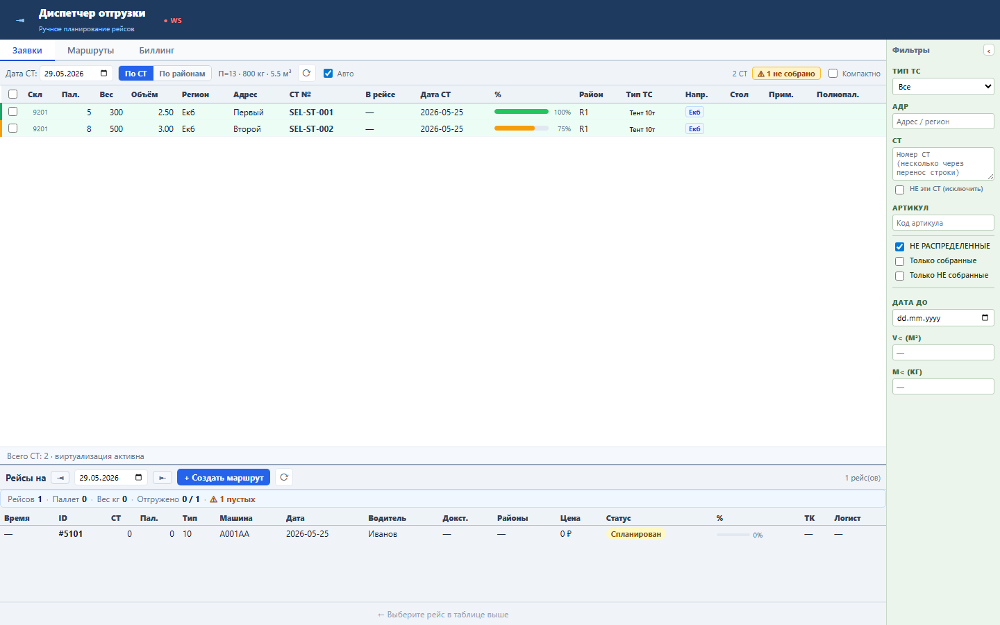
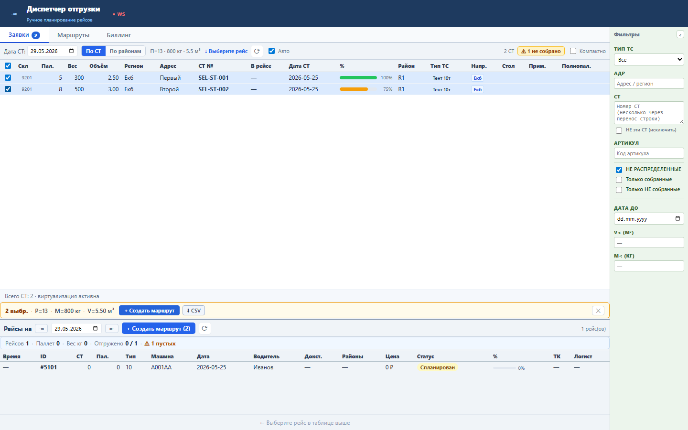
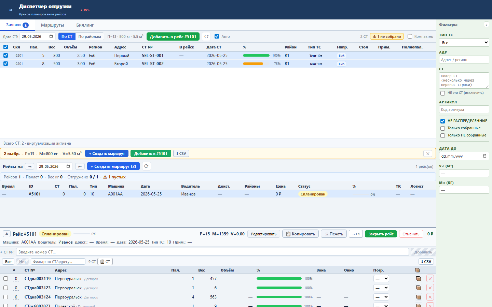

Панель показывает диспетчеру масштаб выбранных СТ и быстрые действия без прокрутки к тулбару.
Панель строится из выбранных selectedStNums и агрегирует PALLETS_COUNT, WEIGHT_KG, VOLUME_M3. Если выбран рейс, появляется действие Добавить в #ID.
Sprint 51 закрыт functional, load и UI smoke проверками.


